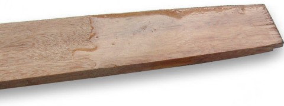
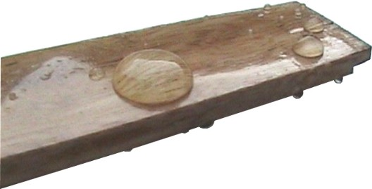
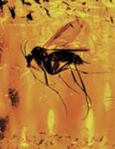

Genesis 6:14 "...and cover it inside and outside with pitch."
There is no need to paint Noah's Ark black - the pitch was probably extracted from pine trees (which might be "gopher wood" anyway). Perfectly water proof, gum based pitch melts easily, has a faint pine odor, looks like a thick varnish, makes a non-slip surface and remains flexible. It can be used as both a coating and an adhesive. Manufacture is simple [3].
Surely this is the perfect material, even by today's standards.

Like a thick varnish: Natural pine tar pitch [2]
applied
to bare wood. Image Tim Lovett 2005
The sample above was applied by heating the pitch over a flame. The pitch is similar to candle wax, but tougher and with a higher melting temperature. Unlike wax, the pitch does not exhibit a sharp melting point, but softens gradually with increasing temperature (like honey). This makes it easy to work since the cooling pitch takes some minutes to harden, even after it cools. Viscosity is quite low when hot, similar to paint and seems to resist dripping [1].
The appearance of the pitch coated wood is similar to a high gloss polyurethane - very clear with a hint of amber. However the slightly tacky surface would not hold a gloss on a wear surface such as a floor. The advantage however, is that the pitch should make the decks a non-slip surface - even when wet. Rosin is used to make violin bow "grip" but not "stick", exactly what you want when walking on a deck in heavy seas.
Anyone who has climbed a pine tree will know pine gum is not easy to clean off your hands. It is waterproof and doesn't respond to soap either. I washed it off with methylated spirit (methanol) quite easily, so it should dissolve in strong alcohol (ethanol). Terpentine is a better solvent if Noah got far enough to get a distillation process going - something that makes pitch production far more efficient. Linseed oil was also mixed with amber resin to produce varnish for violins.
Flammability does not appear to be a problem, although it would be a risk once a fire took hold. In a naked flame the pitch melts like a candle but the flame extinguishes when removed from the flame, This means the pitch could be applied by pouring from a cooking pot, spread out with a hot iron and, if desired, glossed using a torch flame.
Pitch, gum, rosin, amber, pine tar, oleoresin... different names for the same thing. The various forms are all derived from the sticky sap of pines and other trees. Pine tar production is known as colophony.
Most readers would assume the pitch was meant to waterproof the Ark. This has been practiced since antiquity, and tree resin has been the dominant source. The pitch is insoluble in water.

Waterproof: Pitch coating acts as a water barrier. Image Tim Lovett 2005
Waterproofing also has a preserving effect, not that preservation is needed when the voyage lasts four to five months. Perhaps the construction period was quite long and preservation was needed on exposed woodwork.

Antiseptic: Beautifully preserved in amber - petrified tree sap.
The pitch for Noah's Ark is not a petrification process necessarily, although obviously it all happened pretty quick for this little fellow. The bug got stuck, the sap went stiff, and it kept getting harder before the rotting process could get underway. It does show that decomposition was initially prevented by simple gooey sap.
The adhesive performance of the pitch will be very sensitive to the quality of resin, extraction process and how it is prepared. Adhesives are a large part of modern rosin applications, but as a starting point the mechanical properties of simple brewer's pitch could be studied. With low quality surface finish (rough sawn) the ideal adhesive would be flexible and accommodating. Pitch adhesive would be ideal low grade adhesive where large surface areas are used.
1. Resists dripping. Thixotropic. the comparison between honey and tomato sauce is helpful here. Honey drips down a vertical surface but not tomato sauce. Paint is between these extremes - it won't drip unless the coating is heavy, or the paint has been thinned out excessively. Hot pine pitch is probably more like honey in it's low-shear-rate viscosity, otherwise it could never encapsulate a wasp so perfectly. After the hot pitch has been applied, the cooling effect of the surface would do the trick. The choice of tree and processing of the pitch (cooking mostly) would dictate the viscosity of the product. Return to text
2. Brewer's Pitch
Brewer's pitch or pine tar is a natural resin collected from
pine trees. It has been used throughout history for waterproofing or sealing
just about everything. Brewer's pitch has a higher melting point than wax and
cannot be melted in an ordinary double boiler like wax. We suggest melting the
pitch in a discarded metal can (use soup can) on a camp stove outside. The pitch
will melt slowly. When it has completely turned to liquid, pick up the can with
a pair of pliers and pour it in or on your project. The pitch will solidify
rather slowly and you will have time to work with it. Return the unused portion
to the can and save it for later use.
Return to text
3. Manufacture of Rosin. The sticky sap is heated to vaporize the volatile liquid terpene components. Hence the pitch making industry (known as naval stores in the US, also colophony) produced terpentine as an associated product. Return to text